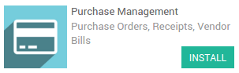

概述
存货是你的业务的中心。存货真的很复杂，但是在YuanCloud中，无论是收货还是发货都不能再简单了。我们将在本文档中演示从收货到发货是如何的简单。
YuanCloud库存模块和其他的应用完全的集成，例如 采购, 销售 or 库存。但它不局限于这些过程，它还能完全的和 电商，生产 ，维修 等模块集成。
如何处理收货？
安装采购模块
首先，你需要安装 采购模块 ，进入菜单 并安装。
创建采购订单
进入**采购**模块。第一个看到的界面是**询价需求单**列表，点击**创建**按钮。
输入**供应商**信息并点击**添加一个新条目**给询价单添加一些产品。

一旦确定了产品，价格和数量等，可以点击**确认订单**。
针对收货的退货
2步采购退货
在采购订单
在采购订单的右上角，你会按到一个和**收货**关联的按钮：

点击查看**调拨单**
从仓库的仪表盘
打开**库存**应用，点击**# 待收**查看收货列表并处理。

在列表中，点击与采购订单相关的一个

处理收货

要处理库存调拨，只要简单的点击**确认**就可以完成调拨。一条信息会弹出问你是否要完成所有数量，如果是就点击**应用**。
注解
补货可以自动进行。详情请参阅我们的文档:文档:[UNKNOWN NODE title_reference]
如何处理发货单？
安装销售模块
首先，你需要安装 销售管理 模块。进入菜单 并安装。

下销售订单
进入**销售**应用，点击你所在团队的**报价单**按钮。

你将得到所有报价单的列表。点击**创建**按钮。
输入**客户信息**并点击**添加新条目**在报价单中添加一些产品。

点击**确认销售**下单。
发货的退货
有2中方法给发货单退货：
从销售订单
在销售订单的右上角，你会看到和**发货**相关的按钮：

点击查看**调拨单**
从仓库的仪表盘
打开**库存**应用，点击**＃待做**查看收货单列表并处理。

在列表中，点击和该销售订单相关的一个

注解
如果库存中没有产品，销售订单会在看板中的**等待**中显示。
处理发货
要处理库存转移。只要简单的点击**确认**就可以完成转移。一条信息会弹出来问你是否需要完成所有的数量，如果是的话点击**应用**。
注解
电商订单用同样方法处理
小技巧
你可以容易的把发货单和不同的发货方式集成起来，请参阅文档:文档：[UNKNOWN NODE title_reference]。
高级流程
在该文档中，演示的流程都是最简单的，YuanCloud也可以通过配置仓库的高级功能适应更多公司的需求。
默认状况下，只配置了**收货**和**发货**，但是你还可以激活多库位和多仓库来处理**内部调拨**。
路径：可以使用推拉规则使流程自动化
[UNKNOWN NODE problematic]多步骤**收货和发货可以在每个仓库中很容易的被配置
更多：条码扫描, 序列号 **, **批次, 交叉转运, 直运, 和第三方 货代 **集成 , **上架 以及 下架 策略…… 所有这些都可以在YuanCloud实现。